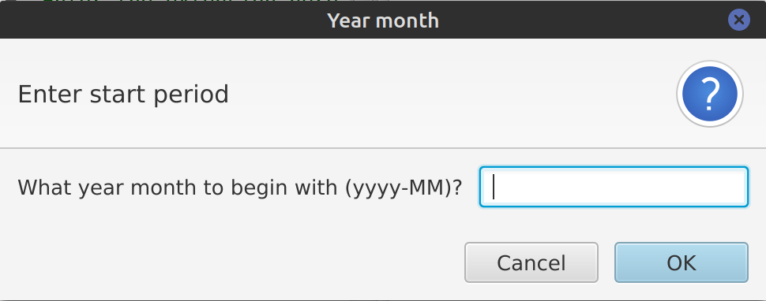
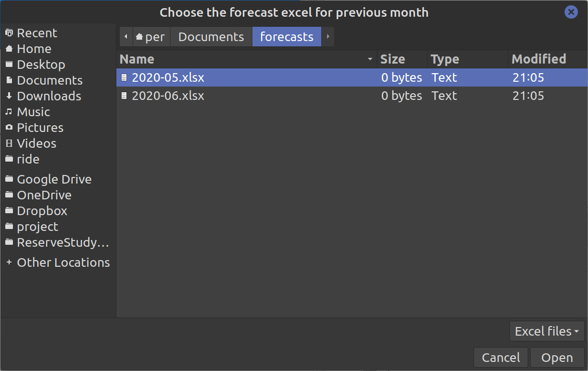
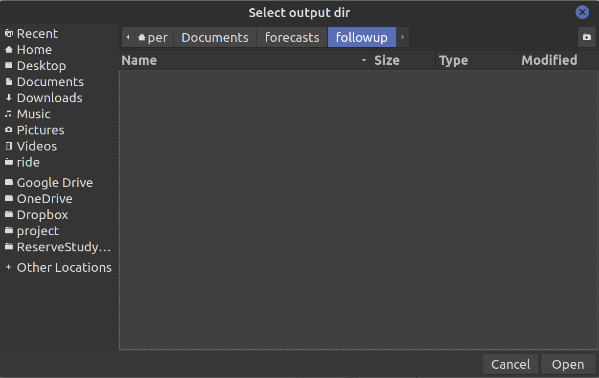

Interacting with Ride
Ride injects an inout component into the session.
It is defined as follows:
Display images in the Plot tab
void display(Node node, String... title);
void display(Image img, String... title);
Here is an example; also showing the use of rideutils (readImage) which is always awailable in Ride:
library("grDevices")
library("graphics")
library("se.alipsa:rideutils")
fileName <- "/tmp/svgplot.svg"
svg(fileName)
plot(sin, -pi, 2*pi)
dev.off()
display(fileName, "svgplot")
Display tabular data in the View tab
void View(SEXP sexp, String... title);
Here is an example:
df <- read.csv("/tmp/sample.csv")
inout$View(df)
library("se.alipsa:rideutils")
View(df)
Note that data is presented "as is" which is sometimes not what you want. E.g. columns containing Date or POSIXlt/POSIXct
will be shown as numbers which is the underlying implementation of dates in R.
If you use rideutils then this will be handled for you, otherwise you probably want to do something like this
to get understandable data: inout$View(format(df)).
File and dir contexts
String scriptFile();
Here is an example:
dir <- dirname(inout$scriptFile())
file <- paste0(dir, "/test.csv")
write.csv(mtcars, file)
Use the connections defined in the connections tab
ConnectionInfo connection(String name);
The ConnectionInfo object contains the information you see in the connections tab i.e. name, url, username, password.
Here is an example:
testCon <- inout$connection("test")
con <- dbConnect(JDBC(testCon$getDriver()),
url = testCon$getUrl(),
user = testCon$getUser(),
password = testCon$getPassword()
)
User input
It is also possible to do simple gui input interaction with the user running the R script using rideutils. There are
3 methods available:
- prompt - Pops up a dialog prompting for a text input
- chooseFile - Opens a file chooser dialog
- chooseDir - Opens a directory chooser dialog
Here is an example:
library("se.alipsa:rideutils")
fileType <- prompt("What kind of filetype?", message = "Enter the extension here")
print(paste("Filetype is", fileType))
file <- chooseFile(
"pick a file",
".",
paste(fileType, "files"),
paste0("*.", tolower(fileType)),
paste0("*.", toupper(fileType))
)
print(paste("File chosen was", file))
dir <- chooseDir("Select output dir", ".")
print(paste("Output dir set to", dir))
They are defined as follows:
prompt
Allows a user to enter string input which we can use in subsequent code. It is defined as follows:
prompt <- function(title = "", headerText = "", message = "")
It returns a string (character vector) with user input or NA if cancel was pressed.
The following example:
fileType <- prompt("Year month", "Enter start period",
"What year month to begin with (yyyy-MM)?")
Will result in the following (blocking) pop up:

readline
Overrides the base R readline function and pops up a graphical input dialog instead of reading from stdin. It is defined as follows:
readline <- function(prompt = "")
>
The following example:
var <- readline("enter a number")
print(paste("var is", var))
chooseFile
Allows a user to pick a file. it is defined as follows:
chooseFile <- function (title, initialDir = ".", description, ...)
The elipsis parameter (...) are the allowed file patterns (typically extensions) that the user can pick.
It returns a string (character vector) with the full path to the chosen file or NA if cancel was pressed.
The following example:
file <- chooseFile(
"Choose the forecast excel for previous month",
".",
"Excel files",
"*.xls", "*.xlsx"
)
Will result in the following (blocking) pop up:

chooseDir
Allows a user to pick a directory. It is defined as follows:
chooseDir <- function (title, initialDir = ".")
It returns a string (character vector) with the full path to the chosen directory or NA if cancel was pressed.
The following example:
dir <- chooseDir("Select output dir", ".")
Will result in the following (blocking) pop up:

promptDate
Pops up a date picker dialog allowing the user to pick a date. It is defined as follows:
promptDate <- function(title = "", message = "",
outputFormat = "yyyy-MM-dd")
Parameters:
- outputFormat - determines the format of the picked date in the dialog as well as in the
return value
return value: a character string formatted according to the outputFormat param or
in the format "yyyy-MM-dd" is no outputFormat is given.
Example:
library("se.alipsa:rideutils")
date2 <- promptDate("Date", message = "Another date",
outputFormat = "dd MMM yyyy")
print(paste("Date is", date2))
promptYearMonth
promptYearMonth <- function(title = "",
message = "", from=NA, to=NA,
initial=NA, languageTag=NA,
monthFormat = "MMMM", outputFormat = "yyyy-MM")
Parameters:
- from - a character string with the start year month than can be chosen in the format "yyyy-MM".
Default value NA will be converted to the initial date minus 3 years
- to - a character string with the en year month than can be chosen in the format "yyyy-MM"
Default value NA will be converted to the initial date plus 3 years
- initial - the initial (default) value in the format "yyyy-MM"
Default value NA will be converted to current year month.
- languageTag - The short code for the local e.g. en-US. For a full list of
language tags see https://www.oracle.com/java/technologies/javase/jdk8-jre8-suported-locales.html
Default value NA vill be converted to the system default language setting.
- monthFormat - determines the format of the month in the dialog
- outputFormat - determines the format of the picked date in the dialog as well as in the
return value
* display an image in the Plot tab
*/